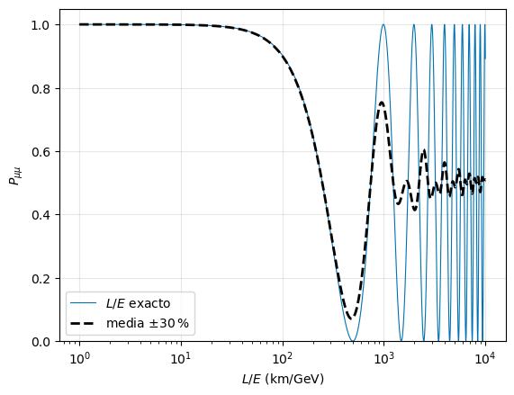

Leptóns: a man esquerda da Natureza#
# Configuración: o código auxiliar está no paquete notebooks/fnyp/
try:
import fnyp
except ModuleNotFoundError: # en Google Colab cómpre descargar antes o repositorio
!git clone -q https://github.com/xabiercidvidal/USC-FNeP.git
import sys; sys.path.append('USC-FNeP/notebooks')
from fnyp.inicio import *
Last version Wed Oct 7 08:58:39 2026
Obxectivos#
O tema ten tres partes:
Os leptóns e a universalidade. Tres familias que se comportan igual fronte á interacción feble, unha vez descontada a masa.
A violación da paridade. O experimento de Wu, a estrutura \(V-A\) das correntes cargadas e a quiralidade: a interacción feble só ve a man esquerda dos fermións. As súas consecuencias: a helicidade do neutrino e a desintegración do pión.
As oscilacións de neutrinos. Os neutrinos cambian de sabor ao propagárense, o que esixe que teñan masa: a primeira fenda do Modelo Estándar.
O desenvolvemento matemático da quiralidade está en ext-quiral.
1. Os leptóns e a universalidade#
1.1. Características dos leptóns#
Os leptóns preséntanse en tres xeracións, agrupados en dobletes:
\(e\) |
\(\mu\) |
\(\tau\) |
\(\nu\) |
|
|---|---|---|---|---|
masa |
0.511 MeV |
105.7 MeV |
1777 MeV |
\(< 0.45\) eV |
carga |
\(-1\) |
\(-1\) |
\(-1\) |
\(0\) |
vida media |
estable |
\(2.197\,\mu\mathrm{s}\) |
\(290.3\) fs |
estable |
O electrón é estable porque é o leptón cargado máis lixeiro e a carga consérvase; o neutrino, porque é o leptón máis lixeiro. Canto voan o \(\mu\) e o \(\tau\) antes de desintegrárense calculáchelo na tarefa «Canto voa unha partícula inestable?» da introdución.
1.2. Desintegracións#
fracción de desintegración |
|
|---|---|
\(\mu \to e + \bar{\nu}_e + \nu_\mu\) |
\(\simeq 100\,\%\) |
\(\tau \to \mu + \bar{\nu}_\mu + \nu_\tau\) |
\(17.4\,\%\) |
\(\tau \to e + \bar{\nu}_e + \nu_\tau\) |
\(17.8\,\%\) |
\(\tau \to \mathrm{hadróns} + \nu_\tau\) |
\(64.8\,\%\) |
|
desintegracións do \(\mu\) (arriba) e do \(\tau\) (abaixo) |

1.3. Conservación do número leptónico#
En todas as interaccións observadas consérvase o número leptónico total, \(L\) (leptóns menos antileptóns), e tamén o de cada familia por separado:
\(L_e\) |
\(L_\mu\) |
\(L_\tau\) |
\(L\) |
|
|---|---|---|---|---|
\((e, \nu_e)\); \((e^+, \bar{\nu}_e)\) |
\(+1\); \(-1\) |
\(0\) |
\(0\) |
\(+1\); \(-1\) |
\((\mu, \nu_\mu)\); \((\mu^+, \bar{\nu}_\mu)\) |
\(0\) |
\(+1\); \(-1\) |
\(0\) |
\(+1\); \(-1\) |
\((\tau, \nu_\tau)\); \((\tau^+, \bar{\nu}_\tau)\) |
\(0\) |
\(0\) |
\(+1\); \(-1\) |
\(+1\); \(-1\) |
Os experimentos que buscan a súa violación só puxeron límites. O máis forte é o de \(\mu \to e + \gamma\), que conserva a carga e \(L\) pero non \(L_e\) nin \(L_\mu\): \(\mathcal{Br} < 1.5 \cdot 10^{-13}\) (MEG II, 2025).
[+] Mirador. As oscilacións de neutrinos (terceira parte do tema) si violan o número leptónico de familia: un \(\nu_\mu\) chega como \(\nu_\tau\). O número leptónico total segue conservándose.
[>] Tarefa — Que se conserva?
Comproba que \(L_e\), \(L_\mu\), \(L_\tau\) e \(L\) se conservan nas desintegracións da táboa.
Pode ocorrer \(\mu \to \nu_\mu + e + e^+\)? E \(\tau \to \mu + \mu + \mu^+\)? Di que lei violaría cada unha.
Por que \(\mu \to e + \gamma\) é tan boa sonda de física nova?
Solución
Por exemplo, \(\mu \to e + \bar{\nu}_e + \nu_\mu\): \(L_\mu\): \(1 \to 0 + 0 + 1\); \(L_e\): \(0 \to 1 - 1 + 0\). Igual co \(\tau\).
\(\mu \to \nu_\mu + e + e^+\) non conserva a carga (\(-1 \to 0 - 1 + 1 = 0\)): prohibida sen máis. En cambio, \(\tau \to \mu + \mu + \mu^+\) conserva a carga (\(-1 \to -1\)) e \(L\) (\(1 \to 1\)), pero non \(L_\tau\) (\(1 \to 0\)) nin \(L_\mu\) (\(0 \to 1\)): violaría o número leptónico de familia. Non se observou: \(\mathcal{Br} < 2 \cdot 10^{-8}\).
No Modelo Estándar (coas masas dos neutrinos) a súa fracción é da orde de \(10^{-54}\): inobservable. Calquera sinal sería física nova.
1.4. Descubrimentos dos leptóns#
O positrón (1932): C. Anderson, nunha cámara de néboa dentro dun campo magnético, con raios cósmicos (vímolo en perspectivas).
O muón (1936–37): Anderson e Neddermeyer atopan nos raios cósmicos unha partícula penetrante; en 1947, con emulsións fotográficas, sepárase do pión, que se desintegra nel.
O tauón (1975): M. Perl, no colisionador \(e^+e\) SPEAR de SLAC, con sucesos \(e^+ + e \to \tau^+ + \tau\) nos que un \(\tau\) daba un electrón e o outro un muón.
O \(\bar{\nu}_e\) (1956): F. Reines e C. Cowan, xunto ao reactor de Savannah River.
O \(\nu_\mu\) (1962): L. Lederman, M. Schwartz e J. Steinberger, co primeiro feixe de neutrinos (AGS de Brookhaven): os \(\nu_\mu\) producen muóns e non electróns, así que son distintos dos \(\nu_e\).
O \(\nu_\tau\) (2000): a colaboración DONUT, en Fermilab, con emulsións.
Do espectro \(\beta\) ao neutrino#
O espectro continuo da desintegración \(\beta\) e a solución de Pauli, un neutrino neutro e case indetectable, vímolos na introdución. A alternativa que se discutía entón era abandonar a conservación da enerxía:
«No estado actual da teoría atómica podemos dicir que non temos ningún argumento, nin empírico nin teórico, para defender o principio da enerxía no caso das desintegracións \(\beta\).»
— N. Bohr, Faraday Lecture (1932)
|
a carta de Pauli ás «señoras e señores radioactivos» (1930) |

A detección do neutrino#
B. Pontecorvo [>] propuxo usar o enorme fluxo de antineutrinos dun reactor e a desintegración \(\beta\) inversa:
En 1956, F. Reines e C. Cowan observárona xunto ao reactor de Savannah River (Carolina do Sur), cun fluxo de \(\sim 10^{17}\ \bar{\nu}/(\mathrm{m^2\,s})\). O limiar, \(1.8\) MeV, calculáchelo na tarefa «Canta enerxía fai falta?» da introdución.
o detector de Cowan e Reines |
esquema da detección [AB2.6] |
A sinatura é unha dobre coincidencia retardada: primeiro os dous fotóns de \(511\) keV da aniquilación do positrón; uns microsegundos despois, os fotóns da captura do neutrón no cadmio disolto na auga.
Reines e Cowan comunicáronllo a Pauli por telegrama:
«Comprácenos informalo de que detectamos definitivamente neutrinos dos fragmentos de fisión observando a desintegración beta inversa de protóns. A sección eficaz observada concorda ben coa esperada, de seis por dez á menos corenta e catro centímetros cadrados.»
— F. Reines e C. Cowan, telegrama a W. Pauli, 14 de xuño de 1956
|
o telegrama |

[AB2.2]
1.5. Que máis quererías saber?#
Xa coñeces os seis leptóns: como se descubriron, como se desintegran e que números se conservan. E os neutrinos en particular: neutros, case sen masa, só senten a interacción feble e tardaron 26 anos en detectarse.
Antes de seguir, móllate: que preguntas te farías sobre os leptóns, e en especial sobre os neutrinos? Fai a túa lista. A algunhas responderemos neste tema; outras non teñen resposta aínda.
Algunhas preguntas#
As que responde este tema:
Compórtanse igual as tres familias? Si, unha vez descontada a masa: é a universalidade, a continuación.
Só hai tres? Tres neutrinos lixeiros: dio a resonancia do \(Z\), a continuación.
Por que só vemos neutrinos levóxiros? Porque a interacción feble só ve a man esquerda: segunda parte.
Teñen masa? Cambian de sabor? Si, as dúas cousas, e unha implica a outra: as oscilacións, terceira parte.
As que seguen abertas:
Por que tres? Nada no Modelo Estándar fixa o número de familias. Dúas pistas: cada familia de leptóns vai cunha de quarks (a teoría precísao para ser consistente), e con tres familias de quarks cabe a violación de \(CP\). Kobayashi e Maskawa predixeron a terceira por iso, en 1973, antes de que se descubrisen o \(\tau\) e o quark \(b\).
Por que esas masas? No Modelo Estándar cada masa é un parámetro libre, o acoplamento da partícula co Higgs. Van de \(0.511\) a \(1777\) MeV, e os neutrinos están por debaixo de \(0.45\) eV, un millón de veces máis lixeiros ca o electrón. Ninguén sabe explicar o patrón.
Son fundamentais? Ata onde podemos ver, si: ningún experimento atopou estrutura nos leptóns, ata distancias de \(\sim 10^{-19}\) m, dez mil veces menos ca o raio do protón.
É o neutrino a súa propia antipartícula? Se o é (un neutrino de Majorana), existe a desintegración dobre \(\beta\) sen neutrinos, \({}^{136}\mathrm{Xe} \to {}^{136}\mathrm{Ba} + e + e\), que viola o número leptónico en dúas unidades. Búscana, entre outros, NEXT, no Laboratorio Subterráneo de Canfranc, e KamLAND-Zen, en Xapón.
Cantas familias hai?#
En LEP (CERN, 1989–2000) producíronse millóns de \(Z\) en \(e^+ + e \to Z \to f + \bar{f}\): é a resonancia que viches na introdución. A súa anchura total é a suma das parciais:
Os neutrinos non se ven, pero cada sabor abre unha canle máis (\(\Gamma_{\nu\nu} \simeq 167\) MeV): a resonancia ensánchase e o seu pico, \(\sigma_{\max} \propto \Gamma_{ee}\Gamma_{\mathrm{had}}/\Gamma_Z^2\), baixa. Medindo a forma da resonancia e as anchuras visibles cóntanse as invisibles [PDG]:
sección eficaz hadrónica arredor do \(Z\): medidas promediadas de ALEPH, DELPHI, L3 e OPAL (erros multiplicados por 10) e predición con 2, 3 e 4 neutrinos [LEP] |
Que ves? Lonxe do pico as tres curvas case coinciden: a diferenza está no pico, que baixa arredor dun \(13\,\%\) por cada neutrino máis. Os datos caen sobre a de tres, mesmo cos erros multiplicados por dez.
Hai tres neutrinos lixeiros (\(m_\nu < m_Z/2\)) que se acoplan ao \(Z\). Unha cuarta familia precisaría un neutrino de máis de \(45\) GeV, moi distinto dos outros tres. Máis no tema do Modelo Estándar.
[+] Mirador — Faltaba medio neutrino?
O valor que publicou LEP en 2006, \(2.984 \pm 0.008\), quedaba dúas desviacións por debaixo de \(3\): faltaba medio neutrino? En 2020, P. Janot e S. Jadach revisaron o cálculo da luminosidade, a sección eficaz Bhabha (\(e^+ + e \to e^+ + e\)) coa que se normalizan as contas, e a discrepancia desapareceu. [JJ]
1.6. Universalidade leptónica#
A universalidade di que o acoplamento do \(W\) é o mesmo para as tres familias. Comprobámolo cos datos, supoñendo que cada familia puidese ter o seu propio acoplamento, \(g_W^\alpha\) (\(\alpha = e, \mu, \tau\)).
A anchura do muón é (a regra de Sargent de ext-cinematica, sección 7, coa relación entre \(G_F\) e \(g_W\) de ext-feynman, sección 4):
con \(G_F/\sqrt{2} = g_W^2/8m_W^2\). Para o \(\tau\), igual con \(m_\tau\) e \(g^\tau_W\):
No cociente cancélanse \(g^e_W\), \(m_W\) e os números:
O acoplamento é o mesmo para o \(\mu\) e o \(\tau\), ao tres por mil: \(g^\mu_W = g^\tau_W = g_W\). Toda a diferenza entre as súas vidas medias, sete ordes de magnitude, póna a masa, á quinta potencia.
Con \(G_F = 1.166 \cdot 10^{-5}\) \(\mathrm{GeV}^{-2}\) e \(m_W = 80.37\) GeV, \(g_W = 0.65\). [AB7.2]
[>] Tarefa — A universalidade en números
Executa a cela: calcula \((g^\tau_W/g^\mu_W)^2\) e o seu erro a partir dos datos do PDG.
Que medida domina o erro?
Fai o mesmo coas dúas canles do \(\tau\), \(\tau \to \mu + \bar{\nu}_\mu + \nu_\tau\) e \(\tau \to e + \bar{\nu}_e + \nu_\tau\), para obter \((g^\mu_W/g^e_W)^2\). Por que o cociente de fraccións, \(17.39/17.82 = 0.976\), non é exactamente \(1\)?
# universalidade: (g_tau/g_mu)^2 a partir de vidas medias, masas e a fracción de tau -> e
tau_tau, dtau_tau = 290.3e-15, 0.5e-15 # s
m_tau, dm_tau = 1776.93, 0.09 # MeV
br_e, dbr_e = 0.1782, 0.0004
tau_mu, m_mu = 2.1969811e-6, 105.6584 # s, MeV
ratio = (tau_mu * m_mu**5) / (tau_tau * m_tau**5) * br_e
dratio = ratio * np.sqrt((dtau_tau/tau_tau)**2 + (5*dm_tau/m_tau)**2 + (dbr_e/br_e)**2)
print(f' (g_tau/g_mu)^2 = {ratio:.4f} +- {dratio:.4f}')
print(f' contribucións: tau_tau {dtau_tau/tau_tau:.4f}, m_tau^5 {5*dm_tau/m_tau:.4f}, Br {dbr_e/br_e:.4f}')
(g_tau/g_mu)^2 = 1.0024 +- 0.0028
contribucións: tau_tau 0.0017, m_tau^5 0.0003, Br 0.0022
Solución
\((g^\tau_W/g^\mu_W)^2 = 1.002 \pm 0.003\).
A vida media do \(\tau\) e a fracción de desintegración, a partes case iguais (\(0.17\,\%\) e \(0.22\,\%\)). A masa entra á quinta potencia, pero coñécese tan ben que apenas contribúe.
As dúas canles do \(\tau\) teñen a mesma vida media e o mesmo \(m_\tau^5\): o cociente de anchuras é o de fraccións, \(0.976\). A diferenza con \(1\) é de espazo fásico: o muón non é desprezable fronte ao \(\tau\), e o factor exacto, \(f(m_\mu^2/m_\tau^2) \simeq 0.973\), explícaa enteira. Corrixido por el, \((g^\mu_W/g^e_W)^2 \simeq 1.00\).
2. A violación da paridade#
A paridade, \(P\), inverte as coordenadas espaciais, \({\bf x} \to -{\bf x}\): é ver o experimento nun espello e xiralo \(180^\circ\) (a ficha «O espello e a paridade», máis abaixo). Durante séculos deuse por suposto que a Natureza non distingue o experimento da súa imaxe. En 1956, Lee e Yang sinalaron que para a interacción feble ninguén o comprobara.
[i] Ficha — Como se transforman as magnitudes baixo paridade
tipo |
baixo paridade |
exemplos |
|---|---|---|
escalar |
\(+1\) |
enerxía, masa, temperatura |
pseudoescalar |
\(-1\) |
helicidade, \({\bf S}\cdot{\bf p}\) |
vector |
\(-1\) |
posición, momento, campo eléctrico |
vector axial |
\(+1\) |
momento angular, espín, campo magnético |
Un vector axial é un produto vectorial de dous vectores (\({\bf L} = {\bf r} \times {\bf p}\)): os dous cambian de signo e o produto non. Nos espinores, a paridade é \(\Psi(t, {\bf x}) \to \gamma^0\,\Psi(t, -{\bf x})\) (ext-quiral, sección 2.2).
[i] Ficha — O espello e a paridade
Un espello inverte só a coordenada perpendicular a el; a paridade, as tres. Pásase dun á outra cun xiro: un espello horizontal, \((x, y, z) \to (x, y, -z)\), seguido dun xiro de \(180^\circ\) arredor do eixe \(z\), \((x, y) \to (-x, -y)\), dá \((x, y, z) \to (-x, -y, -z)\). En xeral:
Como as leis físicas non cambian ao xirar o experimento, se a Natureza é simétrica fronte a un espello éo fronte á paridade, e ao revés: para o argumento serve calquera dos dous.
A regra do espello. Dun vector (o momento) cambia de signo a compoñente perpendicular ao espello e non as paralelas. Dun vector axial (o espín), ao revés: cambian as compoñentes paralelas ao espello e non a perpendicular. O espín é un xiro, e un xiro arredor dun eixe paralelo ao espello vese ao revés nel.
Exemplo: unha partícula que xira e avanza, co espín e o momento cara arriba: helicidade positiva.
|
unha partícula de helicidade positiva, nun espello vertical e por paridade |

Espello vertical: o momento, paralelo ao espello, non cambia; o xiro vese ao revés e o espín, tamén paralelo, invértese.
Paridade: o momento cambia de sentido e o espín non. É a imaxe do espello vertical xirada \(180^\circ\) arredor do eixe horizontal (o perpendicular ao espello).
As dúas imaxes son distintas, pero nas dúas a helicidade pasa a ser negativa: a imaxe dunha partícula dextróxira é unha partícula levóxira, mírese no espello que se mire. É o que significa que \({\bf S}\cdot{\bf p}\) sexa un pseudoescalar.
2.1. O experimento de Wu#
En 1956–57, C. S. Wu mediu cara a onde saen os electróns de núcleos de \(^{60}\mathrm{Co}\) polarizados (o cobalto da introdución):
|
esquema do experimento [Pen88 e Stigmatella aurantiaca, Wikimedia Commons, CC BY-SA 3.0] |

Arrefriar e polarizar. A mostra é un cristal de nitrato de cerio e magnesio cunha capa de \(^{60}\mathrm{Co}\) (CeMg-nitrate + ⁶⁰Co specimen), dentro dun criostato (Dewar) con helio e nitróxeno líquidos (liquid helium, liquid nitrogen). O imán grande (Magnet) arrefríaa ata uns \(3\) mK (\(0.003\) K) por desmagnetización adiabática, e despois o solenoide (Solenoid) crea un campo \({\bf B}\), ao longo do eixe \(z\), que aliña os espíns dos núcleos. Nuns minutos a mostra quéntase e desordénanse.
Contar electróns. Un centelleador fino xusto enriba da fonte (Scintillator, no centro) recolle os electróns; a súa luz sobe pola guía de luz (Light pipe) ata o fotomultiplicador (Photomultiplier), fóra do frío. O detector está fixo: o que se inverte é o campo do solenoide, e con el os espíns.
Vixiar a polarización. Chamamos eixe á vertical, a dirección do campo e dos espíns (\(z\) na figura), e plano á horizontal que pasa pola mostra. Os fotóns do \(^{60}\mathrm{Ni}^*\) (electromagnéticos) saen igual en todas as direccións se os espíns están desordenados. Se están aliñados, saen máis de lado (no plano) ca cara arriba ou cara abaixo (no eixe), pero igual cara arriba ca cara abaixo. Dous contadores de fotóns de NaI (Scintillator (for measurement of gamma ray polarization)) miden esa anisotropía: o de arriba á esquerda, enriba da mostra, mira ao longo do eixe; o da dereita, á altura da mostra, no plano.
[+] Mirador — Fermi e Gamow-Teller
Aquí o espín do núcleo baixa de \(5\) a \(4\), e esa unidade lévana o electrón e o antineutrino cos espíns paralelos: é unha transición de Gamow-Teller. Nas de Fermi o espín do núcleo non cambia e os dos leptóns son opostos (veralo en Física Nuclear). Cunha Gamow-Teller, os espíns dos leptóns quedan atados ao do núcleo: volveremos a iso.
Antes de seguir, móllate. Empeza por un espello de verdade:
|
Chien-Shiung Wu e a súa imaxe no espello: cal é a foto real? |

[>] Tarefa — Cal é a real?
As dúas imaxes de Wu son unha a reflexión da outra, pero só unha é a fotografía orixinal.
Que detalle che permite distinguilas?
É o mesmo razoamento do experimento: que fai que un fenómeno non sexa igual á súa imaxe?
Solución
A real é a da esquerda. Mira a etiqueta escrita a man no tubo, á altura do brazo de Wu: na da esquerda lese de esquerda a dereita; na da dereita, as letras están ao revés. En xeral, serve calquera cousa cunha «man» preferida que coñezamos: a escritura, os botóns da roupa, a raia do pelo.
O mesmo que coa letra escrita: fai falta algo que distinga a esquerda da dereita. No experimento, ese algo é a relación entre o sentido de xiro do núcleo (o espín, que no espello non cambia) e a dirección na que sae o electrón (que no espello si cambia). Se os electróns saen preferentemente cara a un lado do espín, o experimento e a súa imaxe son distinguibles, coma as dúas fotos. (Formalmente: \({\bf S}\cdot{\bf p} \neq 0\) en media, un pseudoescalar.)
E agora, a desintegración#
O campo e o espín do núcleo apuntan cara arriba, e un electrón sae cara abaixo:
e por paridade? |
Debuxa a imaxe por paridade. Que cambia e que non? Pista: que é un vector e que un vector axial? (a ficha de arriba)
A imaxe por paridade#
|
a desintegración e a súa imaxe por paridade |

O espín do núcleo é un vector axial: por paridade non cambia. O momento do electrón é un vector: cambia de sentido. O electrón que saía cara abaixo, en contra do espín, sae cara arriba, a favor do espín.
(Cun espello de verdade, vertical como o da foto, o xiro do núcleo vese ao revés e é o espín o que se inverte, mentres o electrón segue saíndo cara abaixo: outra vez, a favor do espín. Xirando esa imaxe \(180^\circ\) arredor do eixe perpendicular ao espello obtense a da paridade; a ficha «O espello e a paridade».)
Móllate outra vez:
Que quere dicir que a paridade se conserve neste experimento? Se se conserva, que contas esperas co campo cara arriba e cara abaixo? E se non se conserva?
Para que hai que polarizar os núcleos? Que verías cunha fonte sen polarizar?
Os fotóns, cos núcleos aliñados, distinguen o eixe do plano, pero non o arriba do abaixo. Por que non serven para ver se se viola a paridade? Para que se miden, entón?
O que se espera#
Conservar a paridade é que a imaxe sexa un experimento igual de probable: un electrón que sae formando un ángulo \(\theta\) co espín e outro que sae formando \(\pi - \theta\), igual de frecuentes, \(N(\theta) = N(\pi - \theta)\). Entón saen tantos electróns cara arriba coma cara abaixo, e co detector fixo inverter o campo non cambia as contas. Se non se conserva, a distribución leva un termo en \({\bf S}\cdot{\bf p}_e\), un pseudoescalar: \(N(\theta) \propto 1 + a\,P\,\beta\cos\theta\), con \(P\) a polarización, e as contas cambian ao inverter o campo.
Sen polarizar non hai dirección privilexiada: o termo en \(\cos\theta\) promédiase a cero e non hai asimetría, consérvese ou non a paridade. Por iso a asimetría ten que desaparecer cando a mostra se quenta: é a proba de que vai co espín dos núcleos, e non co aparello.
A emisión dos fotóns é electromagnética e conserva a paridade: a súa distribución é simétrica arriba-abaixo, \(N(\theta) = N(\pi - \theta)\) (só ten potencias pares de \(\cos\theta\)), e isótropa se a mostra está quente. Di canto están aliñados os espíns, pero non cara a onde. É o control: se a asimetría dos electróns se vai ao mesmo ritmo ca a anisotropía dos fotóns, é dos núcleos polarizados.
contas de electróns co campo cara abaixo (\(\times\)) e cara arriba (\(\bullet\)), normalizadas á mostra quente, en función do tempo [WU] |
Que ves?
Co campo cara abaixo cóntanse un \(20\,\%\) máis de electróns ca coa mostra quente; cara arriba, un \(20\,\%\) menos. Se a paridade se conservase, as dúas series estarían en \(1\).
A asimetría desaparece nuns \(7\) minutos, a medida que a mostra se quenta, ao mesmo ritmo ca a anisotropía dos fotóns: vai coa polarización.
O detector está enriba da fonte: co espín cara arriba chegan menos electróns. Os electróns saen preferentemente en sentido oposto ao espín do núcleo.
A polarización é só parcial e parte dos electróns dispérsanse na propia fonte, así que a asimetría real é aínda maior ca a que se ve. A paridade non se conserva: a interacción feble distingue o experimento da súa imaxe.
Lee e Yang recibiron o Nobel de 1957; Wu, que fixo o experimento, non.
Pauli, que estaba disposto a apostar pola conservación da paridade, escribira cando aínda non coñecía o resultado:
«Non creo que o Señor sexa un zurdo feble.»
— W. Pauli, carta a V. Weisskopf, 17 de xaneiro de 1957
A Natureza resultou selo: a interacción feble só actúa sobre a man esquerda dos fermións. Vémolo a continuación.
2.2. As correntes baixo paridade: a estrutura \(V - A\)#
A probabilidade de que o electrón saia nun ángulo é a anchura diferencial, \(\mathrm{d}\Gamma/\mathrm{d}\Omega\); a parte cinemática non distingue o espello, así que a violación ten que estar en \(M_{fi}\).
Con correntes vectoriais non hai violación. Na teoría de Fermi, \(M_{fi} \propto j_{had}\cdot j_{lep}\). Unha corrente vectorial cambia baixo paridade como \((\rho, {\bf j}) \to (\rho, -{\bf j})\), e o produto de dúas é invariante. Fai falta outra peza: a corrente axial, \(j_A^\mu = \bar\Psi\gamma^\mu\gamma^5\Psi\), que se transforma ao revés, \((\rho_A, {\bf j}_A) \to (-\rho_A, +{\bf j}_A)\) (as formas bilineais de perspectivas; a demostración en ext-quiral, sección 2.2). Pero tampouco abonda con dúas axiais: \(A\cdot A\) non cambia. Cómpre que unha mesma corrente mesture as dúas.
O que din os datos. A desintegración do muón, \(\mu^+ \to e^+ + \nu_e + \bar{\nu}_\mu\), é puramente leptónica: o espectro de enerxía do positrón e a súa distribución angular respecto ao espín do muón fixan que formas interveñen. As correntes cargadas son a resta dunha vectorial e unha axial:
a estrutura \(V - A\).
espectro do positrón na desintegración do \(\mu^+\); a liña é a predición de \(V - A\) [MU] |
[+] Mirador — Os parámetros de Michel
En 1950, L. Michel escribiu a distribución máis xeral do positrón en \(\mu^+ \to e^+ + \nu_e + \bar{\nu}_\mu\) cuns poucos parámetros. Sen a masa do electrón:
con \(x = E_e/E_{\max}\) e \(\theta\) o ángulo entre o positrón e o espín do muón. \(\rho\) e \(\delta\) dan a forma do espectro; \(\xi\), a asimetría respecto ao espín, é dicir, a violación da paridade. \(V - A\) predí \(\rho = \delta = 3/4\) e \(\xi = 1\); mídese \(\rho = 0.7498 \pm 0.0003\) e \(\xi = 1.000 \pm 0.001\) [PDG].
|
espectro de enerxía (esq.) e distribución angular no extremo do espectro (dta.) para distintas estruturas da corrente |

O espectro non distingue \(V - A\) de \(V + A\): as dúas dan \(\rho = 3/4\). O ángulo, si: con \(V - A\) o positrón sae a favor do espín do muón; con \(V + A\), en contra; se a paridade se conservase, igual en todas as direccións.
Por que viola a paridade. O produto de dúas correntes \(V - A\) ten catro termos:
\(V\cdot V\) e \(A\cdot A\) son escalares: non cambian no espello. \(V\cdot A\) é un pseudoescalar: cambia de signo. \(M_{fi}\) é unha mestura dos dous, e a súa imaxe no espello, \(V\cdot V + A\cdot A + (V\cdot A + A\cdot V)\), é outra: a probabilidade cambia. Con \(V\) e \(A\) do mesmo peso, a violación é máxima.
[+] Mirador — Outro experimento de Wu, sen núcleos
Os \(\mu^+\) de \(\pi^+ \to \mu^+ + \nu_\mu\) saen polarizados: o pión ten espín \(0\) e o \(\nu_\mu\) helicidade negativa, así que o \(\mu^+\) tamén (verémolo coa desintegración do pión). A súa desintegración é un experimento de Wu limpo: os positróns saen preferentemente a favor do espín do muón, coa asimetría máxima de \(V - A\) (\(\xi = 1\), a figura do mirador de Michel). R. Garwin, L. Lederman e M. Weinrich vírono en Columbia en 1957, e o seu artigo publicouse xunto ao de Wu [GLW]. Hoxe úsase para medir o momento magnético do muón, \(g - 2\): a dirección dos positróns di cara a onde apunta o seu espín.
[i] Ficha — A matriz $\gamma^5$ e as formas bilineais
\(\gamma^5 = i\gamma^0\gamma^1\gamma^2\gamma^3\), que en Pauli-Dirac é \(\begin{pmatrix} 0 & I \\ I & 0 \end{pmatrix}\), cumpre \((\gamma^5)^2 = I\), \((\gamma^5)^\dagger = \gamma^5\) e \(\{\gamma^5, \gamma^\mu\} = 0\) (demostración en ext-dirac, sección 1.7).
forma |
nome |
baixo paridade |
|---|---|---|
\(\bar\Psi\Psi\) |
escalar (S) |
non cambia |
\(\bar\Psi\gamma^5\Psi\) |
pseudoescalar (P) |
cambia de signo |
\(\bar\Psi\gamma^\mu\Psi\) |
vector (V) |
a parte espacial cambia de signo |
\(\bar\Psi\gamma^\mu\gamma^5\Psi\) |
axial (A) |
a parte temporal cambia de signo |
2.3. A quiralidade#
A corrente cargada leva o factor \(\frac{1}{2}(1 - \gamma^5)\). Chamémolo \(P_L\), e ao seu compañeiro, \(P_R\):
Antes de seguir, móllate. Con \((\gamma^5)^2 = 1\) e \(\gamma^5\gamma^0 = -\gamma^0\gamma^5\) (a ficha de arriba):
Calcula \(P_L + P_R\), \(P_L^2\), \(P_R^2\) e \(P_L P_R\). Que tipo de operadores son?
Se o son, sobre que proxectan? Pista: calcula \(\gamma^5 (P_L\Psi)\) e \(\gamma^5 (P_R\Psi)\).
A paridade actúa sobre os espinores como \(\Psi \to \gamma^0\Psi\) (ext-quiral, sección 2.2). En que se converte \(P_L\Psi\)?
As compoñentes quirais#
Son proxectores: \(P_L + P_R = 1\), \(P_{L,R}^2 = P_{L,R}\) e \(P_L P_R = 0\). Separan calquera espinor en dúas partes que non se solapan: \(\Psi = \Psi_L + \Psi_R\), con \(\Psi_{L,R} = P_{L,R}\Psi\).
Proxectan sobre os autoestados de \(\gamma^5\): \(\gamma^5\Psi_L = -\Psi_L\) e \(\gamma^5\Psi_R = +\Psi_R\).
A quiralidade é unha propiedade do espinor, non do movemento. \(\gamma^5\) conmuta cos xiros e os boosts (ext-quiral, sección 6): un \(\Psi_L\) é L para calquera observador. A quiralidade é un invariante Lorentz.
A paridade intercámbiaas: \(\gamma^0 P_L = P_R\,\gamma^0\), así que \(\gamma^0\Psi_L = P_R(\gamma^0\Psi)\): no espello, a parte esquerda convértese na dereita, \(\Psi_L \leftrightarrow \Psi_R\).
|
unha luva esquerda e a súa imaxe no espello: non se superpoñen xirándoas |

O espinor é un obxecto singular: leva dentro dúas partes, unha levóxira e outra dextróxira! Baixo paridade, un escalar non cambia, un vector (como o momento) cambia de sentido e un espinor intercambia as súas dúas partes, como unha luva que no espello se converte na outra.
A corrente cargada só ve a esquerda#
Como \(\bar\Psi\gamma^\mu P_L\Psi = \bar\Psi_L\gamma^\mu\Psi_L\) (a tarefa de abaixo):
Na linguaxe das luvas: nas correntes cargadas só intervén a luva esquerda das partículas e a dereita das antipartículas. As interaccións electromagnética e forte usan as dúas por igual: como quen só conta luvas, non distinguen o orixinal da súa imaxe no espello.
Unha teoría que viola a paridade é unha teoría que prefire unha quiralidade. A feble prefírea de forma máxima: a man dereita non participa. ext-quiral, seccións 2 e 9. [MT6.4]
[+] Mirador — Un obxecto singular
As dúas partes do espinor son case dous obxectos distintos. Os xiros e os boosts non as mesturan: cada unha transfórmase pola súa conta (son os espinores de Weyl, que veremos co neutrino). Só dúas cousas as conectan: a paridade, que as intercambia, e a masa, que as acopla; por iso un fermión con masa precisa as dúas. E tan independentes son, que a interacción feble só ve unha delas.
[>] Tarefa — Os proxectores de quiralidade
Demostra que \(\bar\Psi\gamma^\mu P_L\Psi = \bar\Psi_L\gamma^\mu\Psi_L\). Pista: \(\bar\Psi_L = (P_L\Psi)^\dagger\gamma^0 = \bar\Psi P_R\), e \(P_R\gamma^\mu = \gamma^\mu P_L\).
Demostra que a corrente vectorial non mestura quiralidades, \(\bar\Psi\gamma^\mu\Psi = \bar\Psi_L\gamma^\mu\Psi_L + \bar\Psi_R\gamma^\mu\Psi_R\), pero a masa si: \(\bar\Psi\Psi = \bar\Psi_L\Psi_R + \bar\Psi_R\Psi_L\).
Solución
\(\gamma^{5\dagger} = \gamma^5\) e \(\gamma^5\gamma^0 = -\gamma^0\gamma^5\) dan \(\bar\Psi_L = \Psi^\dagger P_L\gamma^0 = \bar\Psi P_R\). Como \(\gamma^5\) anticonmuta con \(\gamma^\mu\), \(P_R\gamma^\mu = \gamma^\mu P_L\), e \(\bar\Psi_L\gamma^\mu\Psi_L = \bar\Psi P_R\gamma^\mu P_L\Psi = \bar\Psi\gamma^\mu P_L^2\Psi = \bar\Psi\gamma^\mu P_L\Psi\).
Co mesmo, \(\bar\Psi_L\gamma^\mu\Psi_R = \bar\Psi\gamma^\mu P_L P_R\Psi = 0\): a corrente non mestura. En cambio, \(\bar\Psi_L\Psi_L = \bar\Psi P_R P_L\Psi = 0\), e só sobreviven os termos cruzados. A masa acopla a esquerda coa dereita: por iso, para unha partícula con masa, a quiralidade non se conserva ao propagarse.
[i] Ficha — A quiralidade das antipartículas
Para os espinores das antipartículas, \(v\), o autovalor físico da quiralidade é o oposto ao de \(\gamma^5\) (a mesma regra práctica ca coa enerxía e o momento, en perspectivas):
Por iso o mesmo \(P_L\) da corrente selecciona fermións levóxiros e antifermións dextróxiros. [MT6.4]
2.4. Helicidade e quiralidade#
A helicidade é unha propiedade do movemento (o espín sobre o momento); a quiralidade, do espinor (o autovalor de \(\gamma^5\)). Non son o mesmo, pero relaciónanse. Calculemos a parte L e a parte R dos espinores de helicidade, \(u_\pm\), con \({\bf p}\) en \(z\) (ext-quiral, sección 7).
En Pauli-Dirac, \(\gamma^5\) intercambia as compoñentes de arriba e de abaixo, e os proxectores son
Os espinores de helicidade positiva e negativa son
A parte L e a parte R#
\(P_R\) suma as compoñentes de arriba e de abaixo, e \(P_L\) réstaas:
As amplitudes de cada parte (as probabilidades van como o seu cadrado):
helicidade \(\downarrow\) \ quiralidade \(\rightarrow\) |
R |
L |
|---|---|---|
\(+\) |
\(\frac{1}{2}(1+\kappa)\) |
\(\frac{1}{2}(1-\kappa)\) |
\(-\) |
\(\frac{1}{2}(1-\kappa)\) |
\(\frac{1}{2}(1+\kappa)\) |
no vértice do \(W\) |
antifermións, \(v_R\) |
fermións, \(u_L\) |
Con masa, \(u_\pm\) non é autoestado de \(\gamma^5\): leva as dúas partes. No vértice do \(W\) só entra a columna L para os fermións (e a R para os antifermións, cos mesmos coeficientes).
[>] Tarefa — A quiralidade dos espinores de helicidade
Repite o cálculo de \(P_R u_\pm\) e \(P_L u_\pm\) e comproba a táboa.
Son \(u_\pm\) autoestados de \(\gamma^5\)? En que caso?
Que quiralidade ten unha partícula en repouso? E unha sen masa?
Solución
Abonda con aplicar as matrices de arriba: \(P_R\) dá \(\frac{1}{2}(u^{arriba} + u^{abaixo})\) nas dúas metades, e \(P_L\), \(\pm\frac{1}{2}(u^{arriba} - u^{abaixo})\).
Só se unha das dúas partes se anula: con \(\kappa = 1\), é dicir, sen masa. Con masa, un espinor de helicidade definida é sempre unha mestura das dúas quiralidades.
En repouso, \(\kappa = 0\): as dúas partes pesan igual, metade L e metade R. Sen masa, \(\kappa = 1\): \(u_+\) é puramente R e \(u_-\) puramente L. Entre os dous extremos, canto máis rápida vai a partícula, máis se parecen helicidade e quiralidade (ext-quiral, sección 7).
Un mesmo espín, visto moverse cara a un lado ou cara ao outro#
un fermión con masa (Dirac), co espín cara a \(+z\) |
O eixe \(z\) vai na horizontal, cara á dereita: \(\hat{\bf k}\). Un fermión con masa co espín cara a \(+z\) é, en repouso, metade L e metade R. Lanzado cara a \(+z\) ten helicidade positiva e domina a parte R; cara a \(-z\), helicidade negativa e domina a L. O boost non mestura as dúas partes: cada luva segue sendo a mesma e só cambia de tamaño. A área de cada luva é a súa fracción, \(\frac{1}{2}(1 \pm \beta)\): as amplitudes da táboa, ao cadrado e normalizadas (ext-quiral, sección 7.1).
A alta enerxía, \(E \gg m\)#
\(\kappa = \mathrm{p}/(E+m) \to 1\): en cada espinor de helicidade domina unha das dúas partes, e a outra, a compoñente menor, ten unha amplitude
pequena, pero non nula. Un \(u_-\) é case todo L, e un \(u_+\), case todo R. A alta enerxía, helicidade e quiralidade case coinciden: na interacción feble participan sobre todo fermións de helicidade negativa, \(u_-\), e antifermións de helicidade positiva, \(v_+\). É o que exploraba a tarefa «Cando pesan as catro compoñentes?» de perspectivas.
Sen masa#
\(\kappa = 1\) exactamente, e a compoñente menor desaparece:
helicidade \(\downarrow\) \ quiralidade \(\rightarrow\) |
R |
L |
|---|---|---|
\(+\) |
\(1\) |
\(0\) |
\(-\) |
\(0\) |
\(1\) |
Helicidade e quiralidade coinciden. Unha partícula sen masa vai á velocidade da luz: non pode estar en repouso e non se pode adiantar, así que todos os observadores ven a mesma helicidade. Ten unha helicidade e unha quiralidade definidas: L con \(h = -\), R con \(h = +\).
|
un fermión sen masa (Weyl), co espín cara a \(+z\) |

Cada estado leva unha soa man: son os espinores de Weyl, dous obxectos independentes. O \(\nu_L\) do Modelo Estándar é só a man esquerda.
Helicidade e quiralidade non son o mesmo#
Con masa
helicidade, \({\bf S}\cdot\hat{\bf p}\) |
quiralidade, \(\gamma^5\) |
|
|---|---|---|
está definida? |
si, se se move; en repouso non hai \(\hat{\bf p}\) nin helicidade |
non: leva as dúas partes |
consérvase ao propagarse? (conmuta con \(H\)) |
si |
non: a masa mestura L e R |
é a mesma para todo observador? (conmuta con xiros e boosts) |
non: pódese adiantar |
a separación en L e R, si; canto pesa cada parte, non |
Sen masa
helicidade, \({\bf S}\cdot\hat{\bf p}\) |
quiralidade, \(\gamma^5\) |
|
|---|---|---|
está definida? |
si |
si, e coinciden: L con \(h = -\), R con \(h = +\) |
consérvase ao propagarse? (conmuta con \(H\)) |
si |
si |
é a mesma para todo observador? (conmuta con xiros e boosts) |
si: non se pode adiantar |
si |
Por que o \(W\) se acopla á quiralidade#
Se adiantas a un electrón de helicidade negativa, vélo moverse cara atrás, con helicidade positiva. A parte L, en cambio, é a mesma para todos os observadores.
Por iso a interacción escríbese coa quiralidade: o \(W\) acóplase á parte L, e todos os observadores están de acordo en cal é. Se se acoplase á helicidade negativa, dous observadores discreparían sobre se a interacción ocorre.
2.5. A helicidade do neutrino#
É o neutrino o único fermión sen masa? É o que postulaba o Modelo Estándar! Vexamos por que:
Goldhaber mediu a súa helicidade: negativa, como a dun fermión sen masa levóxiro.
Ningún experimento conseguiu medir a súa masa. O mellor límite directo, de KATRIN (2024), é \(m_\nu < 0.45\) eV (\(90\,\%\) CL): un millón de veces menos ca o electrón. [KATRIN]
O experimento de Goldhaber#
En 1957, M. Goldhaber, L. Grodzins e A. Sunyar mediron en Brookhaven a helicidade do neutrino, nun dos experimentos máis enxeñosos da física de partículas. Usaron unha captura electrónica:
|
|
o experimento [GOL] |
espíns e momentos ao longo do eixe |

Tres ideas:
Seleccionar os fotóns opostos ao neutrino. O \(\mathrm{Sm}^*\) retrocede fronte ao neutrino, e os fotóns que emite nesa dirección gañan por efecto Doppler xusto a enerxía que lles falta para dispersarse de forma resonante nun absorbente de \(\mathrm{Sm_2O_3}\). O detector (NaI) só ve eses fotóns.
Momento angular. Ao longo do eixe, o espín do electrón capturado (\(\pm\frac{1}{2}\)) repártese entre o neutrino (\(\pm\frac{1}{2}\)) e o fotón (\(\pm 1\)). Como saen en sentidos opostos, a helicidade do fotón é a do neutrino (a figura da dereita).
Medir a helicidade do fotón. Antes do absorbente, os fotóns atravesan ferro magnetizado. A dispersión Compton nel depende de se o espín do fotón é paralelo ou antiparalelo ao dos electróns do ferro; invertendo o campo \({\bf B}\) e comparando as contas obtense a polarización.
\(s_z(e)\) |
\(s_z(\nu)\) |
\(s_z(\gamma)\) |
\(h(\nu)\) |
\(h(\gamma)\) |
obsérvase? |
|---|---|---|---|---|---|
\(+\frac{1}{2}\) |
\(-\frac{1}{2}\) |
\(+1\) |
\(-\) |
\(-\) |
si |
\(-\frac{1}{2}\) |
\(+\frac{1}{2}\) |
\(-1\) |
\(+\) |
\(+\) |
non |
(co neutrino cara arriba e o fotón cara abaixo). O neutrino ten helicidade negativa. Como case non ten masa, helicidade e quiralidade coinciden: o neutrino é levóxiro, xusto o que pide unha interacción que só ve a man esquerda. [GOL]
2.6. De volta ao experimento de Wu#
Coas helicidades xa se entende por que os electróns do \(^{60}\mathrm{Co}\) saen en contra do espín do núcleo.
O momento angular fixa os espíns. O núcleo está polarizado en \(J_z = +5\), e o \(^{60}\mathrm{Ni}^*\) (\(J = 4\)) ten como moito \(J_z = +4\). O electrón e o antineutrino, con enerxías duns centos de keV, teñen unha lonxitude de onda (\(\gtrsim 300\) fm) moito maior ca o núcleo (\(\sim 5\) fm) e saen sen momento angular orbital: só levan os seus espíns, como moito \(+1\). A única forma de sumar \(5\) é \(4 + 1\): os dous espíns cara arriba, a favor do espín do núcleo.
As helicidades fixan as direccións. O electrón ten helicidade negativa: sae en contra do seu espín, cara abaixo. O antineutrino ten helicidade positiva: sae cara arriba.
|
os espíns (azul) fíxaos o momento angular; os momentos (negro), as helicidades |

É o que viu Wu. Os electróns, con \(\beta \simeq 0.6\), non teñen a helicidade pura (a amplitude da compoñente menor, \(\frac{1}{2}(1 - \kappa)\), non é desprezable): por iso saen preferentemente cara abaixo, non todos.
2.7. O neutrino no Modelo Estándar#
Se o neutrino non ten masa, a ecuación de Dirac sepárase en dúas ecuacións independentes, unha para cada quiralidade (os espinores de Weyl, ext-quiral, sección 4), e en cada unha a helicidade está fixada: \(u_L = u_-\), \(u_R = u_+\). Como o neutrino só interacciona debilmente, e a interacción feble só ve a esquerda, o Modelo Estándar postula:
o neutrino non ten masa;
só existen o neutrino levóxiro, \(\nu_L\), e o antineutrino dextróxiro, \(\bar\nu_R\).
\(P\) |
|||
|---|---|---|---|
\(\nu_L\) |
\(\Longrightarrow\) |
\(\nu_R\) (non existe) |
|
\(C\) |
\(\Downarrow\) |
\(\Downarrow\) |
|
\(\bar\nu_L\) (non existe) |
\(\Longrightarrow\) |
\(\bar\nu_R\) |
A interacción feble viola a paridade \(P\) e a conxugación de carga \(C\) de forma máxima; a combinación \(CP\) leva o \(\nu_L\) ao \(\bar\nu_R\), que si existe.
|
paridade (esquerda-dereita) e conxugación de carga (inverter os grises) sobre un debuxo de M. C. Escher |

2.8. A desintegración do pión#
\(\pi^+ \to l^+ + \nu_l\) |
O pión desintégrase nun leptón e o seu neutrino, e a razón entre as dúas canles é
Pero o electrón ten máis espazo fásico: sae con máis momento ca o muón. Por que o pión case nunca se desintegra en electrón?
Os espíns. O pión ten espín \(0\). No seu repouso, o leptón e o neutrino saen en sentidos opostos, e os seus espíns teñen que sumar cero: se o neutrino ten helicidade negativa, o antileptón \(l^+\) tamén.
momentos e espíns en \(\pi^+ \to l^+ + \nu_l\) |
Pero a interacción feble quere o antileptón dextróxiro, que a alta enerxía é helicidade positiva. A amplitude da parte dextróxira nun \(l^+\) de helicidade negativa é \(\frac{1}{2}(1 - \kappa)\), e coa cinemática de dous corpos (\(E_l\) e \(p_l\) no CM):
O electrón, ultrarrelativista, case non ten parte dextróxira con esa helicidade: a desintegración está suprimida por un factor \(\sim (m_e/m_\mu)^2\). É a supresión por helicidade, unha consecuencia directa de \(V - A\): se a feble non distinguise as mans, o electrón gañaría.
[>] Tarefa — A supresión por helicidade
Calcula \(E^*_l\), \(p^*_l\) e \(\beta_l\) para o \(\mu\) e o \(e\) no repouso do pión. Cal é relativista?
Calcula o cociente de espazos fásicos, \(p^*_e/p^*_\mu\).
Calcula o cociente das amplitudes dextróxiras ao cadrado, \(\left[\frac{m_e/(m_\pi + m_e)}{m_\mu/(m_\pi + m_\mu)}\right]^2\), e multiplica polo anterior. Compara con \(1.23 \cdot 10^{-4}\).
# desintegración do pión: cinemática no CM e supresión por helicidade
mpi, mmu, me = 139.570, 105.658, 0.511 # MeV
E = lambda ml: (mpi**2 + ml**2) / (2*mpi)
p = lambda ml: (mpi**2 - ml**2) / (2*mpi)
aR = lambda ml: ml / (mpi + ml) # amplitude dextróxira dun l+ de helicidade negativa
print(f' mu: E = {E(mmu):7.3f} MeV, p = {p(mmu):6.3f} MeV, beta = {p(mmu)/E(mmu):.4f}')
print(f' e : E = {E(me):7.3f} MeV, p = {p(me):6.3f} MeV, beta = {p(me)/E(me):.6f}')
fase = p(me) / p(mmu)
hel = (aR(me) / aR(mmu))**2
print(f' espazo fásico p_e/p_mu = {fase:.3f}')
print(f' supresión por helicidade = {hel:.3e}')
print(f' estimación = {fase*hel:.3e} (medida: 1.230e-4)')
mu: E = 109.778 MeV, p = 29.792 MeV, beta = 0.2714
e : E = 69.786 MeV, p = 69.784 MeV, beta = 0.999973
espazo fásico p_e/p_mu = 2.342
supresión por helicidade = 7.168e-05
estimación = 1.679e-04 (medida: 1.230e-4)
Solución
\(E_\mu = 109.8\) MeV, \(p_\mu = 29.8\) MeV, \(\beta_\mu = 0.27\): o muón é lento. \(E_e = p_e = 69.8\) MeV, \(\beta_e = 0.99997\).
\(p^*_e/p^*_\mu = 2.34\): o electrón ten máis do dobre de espazo fásico.
A supresión por helicidade é \(7.2 \cdot 10^{-5}\), e co espazo fásico, \(1.7 \cdot 10^{-4}\): a orde de magnitude correcta, dez mil veces menos do que diría o espazo fásico só.
[+] Mirador. O cálculo completo dá \(\Gamma(\pi \to l\,\nu) \propto m_l^2\,(m_\pi^2 - m_l^2)^2\), e o cociente \(\left(\frac{m_e}{m_\mu}\right)^2\left(\frac{m_\pi^2 - m_e^2}{m_\pi^2 - m_\mu^2}\right)^2 = 1.28 \cdot 10^{-4}\). As correccións radiativas báixano a \(1.235 \cdot 10^{-4}\), de acordo coa medida. O \(m_l^2\) é a supresión por helicidade. [MT11.6]
espectro de enerxía dos electróns nas desintegracións do \(\pi^+\) [AB] |
Que ves? Un pico estreito: os electróns de \(\pi^+ \to e^+ + \nu_e\), monoenerxéticos (desintegración a dous corpos), e poucos. E unha distribución continua moito máis abundante: os da cadea \(\pi^+ \to \mu^+ \to e^+\), da desintegración a tres corpos do muón.
[MT11.2.3, MT11.6, AB7.3–AB7.5]
3. As oscilacións de neutrinos#
3.1. A masa do neutrino#
A masa do neutrino búscase no punto final do espectro \(\beta\) do tritio,
se o neutrino ten masa, o electrón nunca leva toda a enerxía dispoñible e o final do espectro se deforma (sección 7 de ext-cinematica e a tarefa do espectro \(\beta\) da introdución).
final do espectro do tritio cun neutrino de \(\sim 1\) eV |
KATRIN, que mide a masa efectiva do antineutrino electrónico, puxo o mellor límite directo:
un millón de veces menos ca o electrón. [KATRIN]
3.2. O Modelo Estándar queda curto#
Sabemos experimentalmente que os neutrinos cambian de sabor ao propagárense, e que iso só é posible se teñen masa. O Modelo Estándar postula que non a teñen: as oscilacións son a primeira proba experimental de que hai que ir máis alá.
O quebracabezas solar#
Desde finais dos anos 60, o experimento de R. Davis na mina de Homestake (Dakota do Sur) medía un fluxo de \(\nu_e\) solares de só un terzo do que predicía o modelo solar de J. Bahcall. Durante trinta anos, todos os experimentos de neutrinos solares viron un déficit.
En 2001–2002, SNO (Canadá), con auga pesada, mediu por separado o fluxo de \(\nu_e\) e o fluxo total dos tres sabores. O total coincidía co modelo solar: os neutrinos non desaparecen, cambian de sabor. No Sol prodúcense \(\nu_e\); á Terra, ás enerxías de SNO, chegan como \(\nu_e\) só un terzo.
[+] Mirador. B. Pontecorvo propuxera en 1957 que o neutrino podía oscilar a antineutrino, por analoxía cos kaóns neutros. En 1962, Z. Maki, M. Nakagawa e S. Sakata propuxeron que os sabores fosen mesturas de estados de masa, e en 1967 Pontecorvo predixo que un \(\nu_e\) solar podía converterse noutro sabor polo camiño.
Os neutrinos atmosféricos#
Os raios cósmicos producen na atmosfera pións que dan \(\nu_\mu\) e \(\nu_e\). En 1998, Super-Kamiokande (Xapón) atopou que o fluxo de \(\nu_\mu\) depende da dirección: faltan os que veñen de abaixo, os que atravesaron a Terra (\(\sim 10^4\) km), e non os que veñen de arriba (\(\sim 20\) km).
|
Super-Kamiokande: o detector e o principio de detección [SK, MT13.2] |

SK é un cilindro de \(50\) kt de auga, de \(41\) m de alto e \(39\) m de diámetro, cuns \(11\,000\) fotomultiplicadores na parede interior. Detecta o leptón cargado de \(\nu_e + N \to e + X\) ou \(\nu_\mu + N \to \mu + X\) polo seu anel de luz Cherenkov, que dá a enerxía, a dirección e o sabor: nítido para o muón, difuso para o electrón (perspectivas, detectores Cherenkov).
|
sucesos de \(\nu_e\) (esq.) e \(\nu_\mu\) (dta.) fronte ao coseno do ángulo de chegada [SK] |


.png){kind=link}


Que ves? \(\cos\theta = 1\) é de arriba e \(\cos\theta = -1\), de abaixo (atravesando a Terra).
Os \(\nu_e\) coinciden coa predición sen oscilacións.
Aos \(\nu_\mu\) de varios GeV fáltalles case a metade dos que veñen de abaixo.
A liña é a predición con oscilacións: os \(\nu_\mu\) convértense, sobre todo, en \(\nu_\tau\), que SK non ve.
Se oscilan, teñen masa#
Para que un \(\nu_\mu\) se converta en \(\nu_\tau\), o neutrino ten que ser unha mestura de estados que, ao propagárense co mesmo momento, se desfasan. Desfásanse se teñen enerxías distintas, é dicir, masas distintas:
Se as masas fosen iguais (en particular, se fosen todas nulas, como postula o Modelo Estándar), non habería oscilación. Se os neutrinos oscilan, polo menos un deles ten masa. Vexámolo coa fórmula.
3.3. Oscilacións con dous sabores#
Un neutrino de sabor definido non ten por que ter masa definida: pode ser unha mestura de estados de masa. Con dous sabores, \(\alpha, \beta\), e dúas masas, \(m_1, m_2\), a mestura é unha rotación de ángulo \(\theta\):
Os neutrinos prodúcense e detéctanse con sabor definido (nun vértice do \(W\), co seu leptón), pero propáganse como estados de masa, cada un coa súa fase. Producimos un \(\nu_\alpha\) con momento \(\mathrm{p}\):
(a fase \(e^{i{\bf p}\cdot{\bf x}}\) é común aos dous e non importa).
A amplitude de atopalo como \(\nu_\beta = -\sin\theta\,\nu_1 + \cos\theta\,\nu_2\) é
Como as masas son diminutas, \(E_i = \sqrt{\mathrm{p}^2 + m_i^2} \simeq \mathrm{p} + \frac{m_i^2}{2\mathrm{p}}\), e
A probabilidade, con \(|e^{-i\phi} - 1|^2 = 2 - 2\cos\phi = 4\sin^2(\phi/2)\):
Os experimentos non miden un tempo, senón a distancia \(L = t\) á fonte:
(o \(1.27\) sae de repoñer \(\hbar\) e \(c\), sección 1 de ext-cinematica).
Que se le:
a amplitude fíxaa o ángulo de mestura: sen mestura, \(\theta = 0\), non hai oscilación;
a frecuencia fíxaa \(\Delta m^2\): se as masas son iguais, tampouco;
o experimento escolle \(L/E\): para ver a oscilación hai que poñerse onde \(1.27\,\Delta m^2 L/E \sim \pi/2\).
As oscilacións miden diferenzas de masas ao cadrado, non as masas.
[>] Tarefa — Super-Kamiokande coa fórmula
Toma os parámetros atmosféricos, \(\Delta m^2 = 2.5 \cdot 10^{-3}\) \(\mathrm{eV}^2\) e \(\theta = 45^\circ\), e neutrinos de \(E \simeq 1\) GeV.
Os \(\nu_\mu\) que veñen de arriba percorren \(L \simeq 20\) km. Calcula a fase \(1.27\,\Delta m^2 L/E\) e a probabilidade de supervivencia, \(P_{\mu\mu} = 1 - P_{\mu\tau}\). Oscilan?
Os que veñen de abaixo percorren \(L \simeq 10^4\) km. Canto vale a fase? Como SK non coñece \(L\) nin \(E\) con precisión, o \(\sin^2\) promédiase: canto vale \(\langle\sin^2\rangle\)? Que \(P_{\mu\mu}\) esperas? SK ve que falta a metade: que \(\sin^2 2\theta\) implica?
En 2004, SK mediu \(P_{\mu\mu}\) fronte a \(L/E\) e viu o primeiro mínimo cara a \(L/E \simeq 500\) km/GeV. Estima \(\Delta m^2\).
Executa a cela: a partir de que \(L/E\) a media borra a oscilación?
# Super-Kamiokande: probabilidade de supervivencia do nu_mu fronte a L/E
theta, delta_m2 = np.radians(45.), 2.5e-3 # ángulo de mestura; eV^2
psurv = lambda LE: 1 - np.sin(2*theta)**2 * np.sin(1.27 * delta_m2 * LE)**2
LE = np.logspace(0, 4, 4000) # km/GeV
frac = np.linspace(0.7, 1.3, 61) # resolución en L/E: ±30 %
media = np.mean([psurv(LE*f) for f in frac], axis=0) # media sobre a resolución
ax = fn.plot_xy(LE, psurv, r'$L/E$ (km/GeV)', r'$P_{\mu\mu}$', ylim=(0, 1.05),
color='#0072B2', lw=0.8, label='$L/E$ exacto')
fn.plot_xy(LE, media, r'$L/E$ (km/GeV)', r'$P_{\mu\mu}$', ylim=(0, 1.05),
color='k', ls='--', lw=2, label=r'media $\pm 30\,\%$', ax=ax)
ax.set_xscale('log');

Solución
Fase \(= 1.27 \times 2.5 \cdot 10^{-3} \times 20 / 1 \simeq 0.064\) rad, e \(P_{\mu\tau} \simeq \sin^2(0.064) \simeq 4 \cdot 10^{-3}\): \(P_{\mu\mu} \simeq 0.996\). Non lles dá tempo a oscilar.
Fase \(\simeq 32\) rad: moitas oscilacións. Promediando, \(\langle\sin^2\rangle = \frac{1}{2}\) e \(P_{\mu\mu} = 1 - \frac{1}{2}\sin^2 2\theta\). Se falta a metade, \(\sin^2 2\theta \simeq 1\): \(\theta \simeq 45^\circ\), mestura máxima.
O primeiro mínimo está en \(1.27\,\Delta m^2\,(L/E) = \pi/2\): \(\Delta m^2 = \pi/(2 \times 1.27 \times 500) \simeq 2.5 \cdot 10^{-3}\) \(\mathrm{eV}^2\).
A partir de \(L/E \sim 2000\) km/GeV a media queda en \(\frac{1}{2}\): é o que ven os \(\nu_\mu\) que atravesan a Terra. A transición entre \(P_{\mu\mu} = 1\) (de arriba) e \(\frac{1}{2}\) (de abaixo) é a que se ve na figura de SK, en función de \(\cos\theta\). [SKLE]
[>] Tarefa — Onde poño o detector?
Cos parámetros atmosféricos, \(\Delta m^2 = 2.5 \cdot 10^{-3}\) \(\mathrm{eV}^2\) e \(\theta = 45^\circ\):
Debuxa \(P(L)\) para neutrinos de \(1\) GeV. A que distancia está o primeiro máximo?
T2K (e Hyper-Kamiokande) envía \(\nu_\mu\) de \(0.6\) GeV desde J-PARC a Kamioka, a \(295\) km. Está no máximo?
Que \(L\) faría falta para neutrinos de reactor (\(\sim 4\) MeV)? E para ver a oscilación «solar», \(\Delta m^2 = 7.5 \cdot 10^{-5}\) \(\mathrm{eV}^2\), con eses mesmos neutrinos?
# probabilidade de oscilación con dous sabores
theta = np.radians(45.) # ángulo de mestura
delta_m2 = 2.5e-3 # eV^2
ene = 1. # GeV
posc = lambda L: np.sin(2*theta)**2 * np.sin(1.27 * delta_m2 * L / ene)**2
fn.plot_xy(np.linspace(0, 2000, 400), posc,
r'$L$ (km)', r'$P_{\alpha\beta}(L)$', ylim=(0, 1.));

Solución
O primeiro máximo está en \(1.27\,\Delta m^2 L/E = \pi/2\): \(L = \pi/(2 \times 1.27 \times 2.5 \cdot 10^{-3}) \simeq 495\) km por cada GeV.
Con \(E = 0.6\) GeV, o máximo está en \(0.6 \times 495 \simeq 297\) km: T2K está deseñado xusto no primeiro máximo.
Con \(E = 4 \cdot 10^{-3}\) GeV, \(L \simeq 2\) km: é a distancia de Daya Bay, RENO e Double Chooz, que mediron \(\theta_{13}\). Con \(\Delta m^2 = 7.5 \cdot 10^{-5}\) \(\mathrm{eV}^2\) fai falta \(\sim 30\) veces máis, \(\sim 60\) km: KamLAND viu a oscilación solar cos reactores de Xapón a uns \(180\) km.
3.4. Oscilacións con tres sabores#
Con tres neutrinos hai dúas diferenzas de masas ao cadrado independentes [PDG]:
As dúas son distintas de cero: polo menos dous neutrinos teñen masa. As oscilacións non dan as masas: se o máis lixeiro non tivese masa, o máis pesado tería uns \(0.05\) eV; tamén poderían ser as tres case iguais. Tampouco se sabe o signo de \(\Delta m^2_{31}\) (a ordenación das masas).
A mestura é unha matriz unitaria \(3 \times 3\), a PMNS (Pontecorvo-Maki-Nakagawa-Sakata), con tres ángulos e unha fase complexa \(\delta\), como a matriz CKM dos quarks:
Os tres ángulos están medidos; a fase \(\delta\), que violaría \(CP\) nos leptóns, aínda non.
[+] Mirador — O futuro das oscilacións
Na próxima década, Hyper-Kamiokande (Xapón), con \(260\) kt de auga, e DUNE (Estados Unidos), con argon líquido, compararán \(\nu_\mu \to \nu_e\) con \(\bar\nu_\mu \to \bar\nu_e\) para medir a fase \(\delta\) e a ordenación das masas. Se os neutrinos violan \(CP\), poderían estar detrás de que o Universo estea feito de materia (leptoxénese). Hyper-Kamiokande usará o mesmo feixe de J-PARC, a \(295\) km e \(0.6\) GeV: o primeiro máximo da tarefa.
Hyper-Kamiokande comparado con Notre-Dame de París |

[AB10.1, AB10.2, AB10.14, MT13]
Bibliografía#
[AB] A. Bettini, Introduction to Elementary Particle Physics, Cambridge University Press: temas 7 e 10.
[MT] M. Thomson, Modern Particle Physics, Cambridge University Press: temas 6.4, 11, 12 e 13.
[PDG] Particle Data Group.
[WU] C. S. Wu et al., Phys. Rev. 105, 1413 (1957).
[GLW] R. L. Garwin, L. M. Lederman e M. Weinrich, Phys. Rev. 105, 1415 (1957).
[MU] M. Bardon, P. Norton, J. Peoples, A. M. Sachs e J. Lee-Franzini, Phys. Rev. Lett. 14, 449 (1965).
[GOL] M. Goldhaber, L. Grodzins e A. W. Sunyar, Phys. Rev. 109, 1015 (1958).
[KATRIN] KATRIN Collaboration, Science 388, 180 (2025), arXiv:2406.13516.
[LEP] ALEPH, DELPHI, L3, OPAL, SLD Collaborations, Phys. Rept. 427, 257 (2006).
[JJ] P. Janot e S. Jadach, Phys. Lett. B 803, 135319 (2020).
[SK] Y. Ashie et al. (Super-Kamiokande), Phys. Rev. D 71, 112005 (2005).
[SKLE] Y. Ashie et al. (Super-Kamiokande), Phys. Rev. Lett. 93, 101801 (2004).